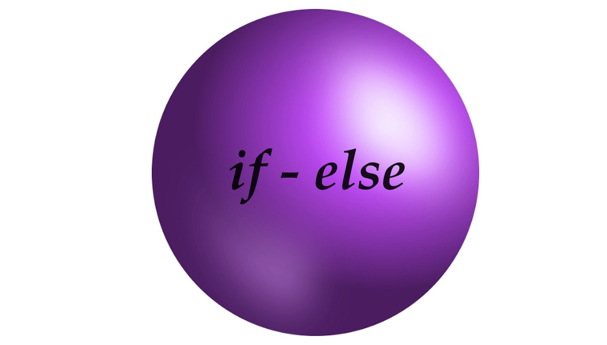
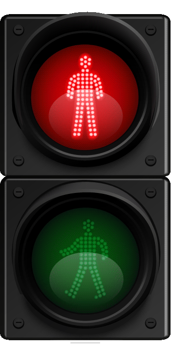
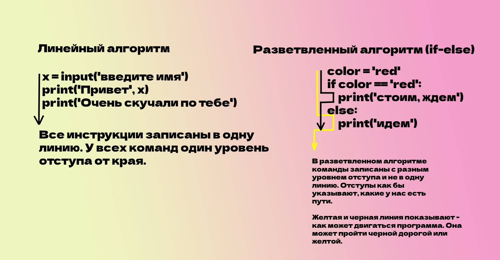
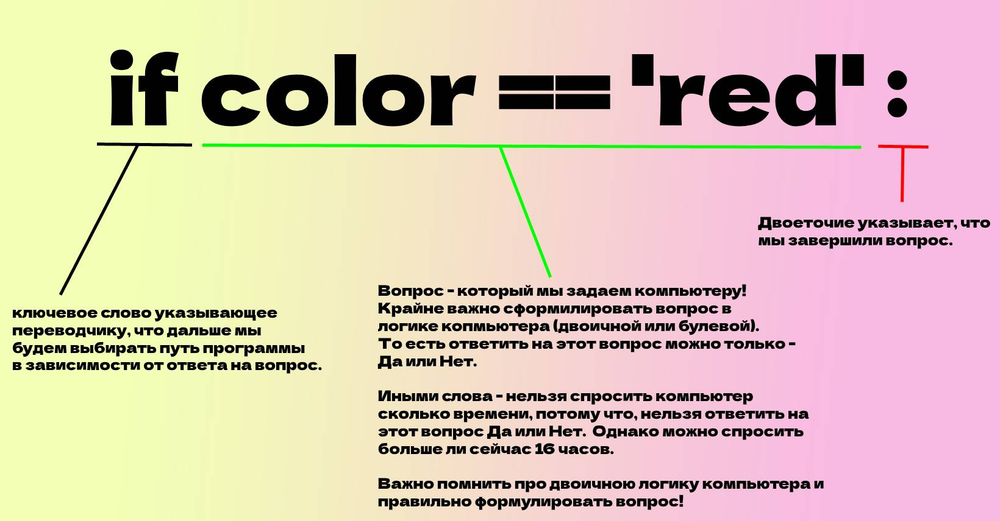
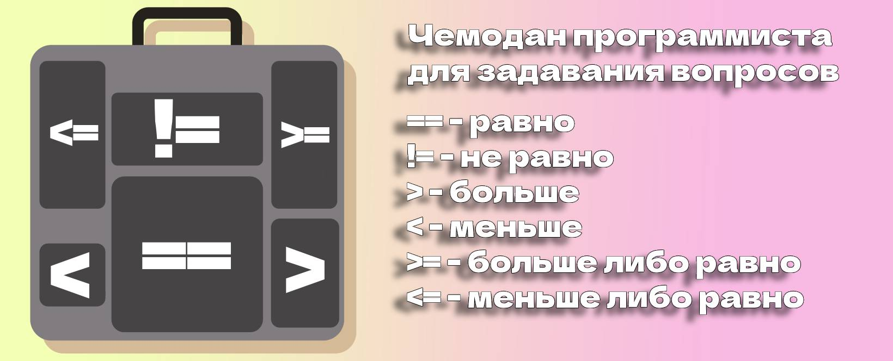
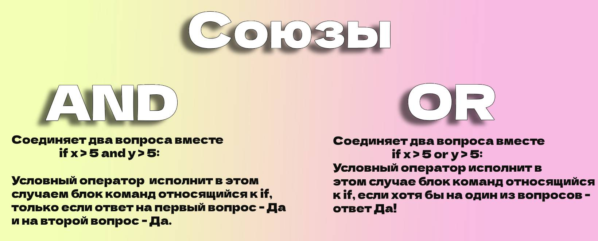

Добро пожаловать в 7 урок
Настало время поговорить о неопределённости! Неопределённость - это когда мы не знаем точного ответа на вопрос или не можем быть уверены в чем-то. Неопределённость наш верный спутник по жизни. Вот Вам некоторые примеры неопределённостей в нашей повседневной жизни:

Все эти неопределённости, вынужден решать наш с Вами мозг, он сталкивается с ними постоянно, и всячески старается сделать наиболее вероятный прогноз и постараться от них защититься. Так например, перед сдачей экзамена, наш мозг может неожиданно вспомнить, про примету с 5ю рублями под пяткой, или пойти по правой дороге, по пути не наступать на красные кафельные плиточки, заранее спрашивать хотя бы примерное время ну или таскать с собой тяжелый зонт всегда (ну а мало ли погода испортится).
Да, человек - невероятен, он способен каждый день, противостоять сотням неопределённостей, находить выходы из всех ситуаций. Однако мы же тут говорим не о человеке. Наша задача программировать компьютер, при помощи языка программирования Python. И раз так, зададимся первым вопросом, а встречаются ли в программах неопределённости?
Давайте для ответа на этот вопрос представим - одну из простейших и всем знакомых программ. Программа авторизации. Она отвечает за проверку введенного пользователем пароля. Если пароль совпадает с заданным паролем для этого пользователя при регистрации, мы пропустим пользователя. Если пароли не совпадают - ответим отказом.
Значит во время своей работы программу - могут ждать некоторые неопределённости. Так например - в программе с вводом пароля, неопределенностью будет являться ситуация ввода пароля, поскольку заранее, никто не может предугадать, правильно ли пользователь наберет пароль. Сама программа не обладает сознанием и интеллектом, она лишь исполняет инструкции и не может предугадать, чем завершиться ввод пароля. Получается, что сам программист должен предвидеть неопределенности, и написать инструкции программе как решать ситуации с этими неопределённостями.
Подведем промежуточный итог. В программировании при решении определенных задач, будут встречаться неопределённости, ситуации в которых, мы не можем заранее предсказать результат. Предусмотреть такие ситуации и написать инструкции для преодоления неопределённостей - должен сам программист.
Хорошо! Неопределённости есть и в жизни и в программах. Но как их решить? Для начала, попробуем порассуждать как неопределённости можно решить в обычной человеческой жизни? Стоит оговориться, что у человека несоизмеримо большое количество вариантов решения задач, чем у машины. Человек, скажем так - видит все возможные варианты и постоянно прикидывает, какой из этих вариантов будет наиболее оптимальным. Компьютерная программа - будет "видеть" лишь те варианты, которые предусмотрит программист в исходном коде.
Тем не менее человек и программа на python - несколько похожи в конструкциях языка. Оба будут использовать слова - Если/Иначе. Найдем неопределённость - пусть будет простая неопределенность ---> переход дороги через пешеходный переход. Неопределённость тут - сигнал пешеходного (двухсекционного) светофора, мы же не можем точно определить в какой момент времени будет гореть красный, а в какой зеленый. Человек будет рассуждать так:
Если горит зеленый - я перехожу дорогу, иначе я стою и жду! Если внимательно присмотреться на это рассуждение - оно будет нам казаться похожим на логику программы. И это и вправду очень похоже. За основу, мы берем нечто - что можно проверить (сигнал светофора), это объективное, реально существующее значение, то от чего можно оттолкнуться при решении задачи. Если мы нашли основу в сигнале светофора (то, что существует и то что можно проверить), то на основе него (смотря на светофор) задать себе вопрос - горит зеленый?
При ответе - Да - пойдем. при ответе - Нет - ждем. То есть человек, примерно так и мыслит, и так рассуждает при решении таких неопределенностей. Но опять же, человек увидит еще сотню вариантов решений (от подземного перехода, до изменения маршрута).
Компьютерная программа на python - будет пытаться решить ситуацию на основе тех инструкций, которые ей дал программист. Использовать в решении - она будет так же как и в примере с человеком что-то реальное, существующее в памяти программы. То - на что можно опереться при решении вопроса какие инструкции исполнять. Представим, что программист создал переменную color. Эта переменная - находится в памяти нашей программы. Скажем что в переменной color - лежит значение red (color = red). Эта переменная color - обозначает сигнал светофора и на нее можно опереться при решении задачи какие инструкции исполнить. Тогда логика будет примерно такой:
Если в переменной color находится значение "red" --- стоим. Иначе --- переходим дорогу.
Как видите логики рассуждений человека и программы - довольны схожи :

Давайте подведем небольшой итог. Программирование - помогает человеку решать задачи с информацией, но и в этих задачах, мы часто натыкаемся на некоторые неопределенности. Эти самые неопределенности программист должен предугадать, и описать при помощи некоторых инструкций как программе поступить в момент этой самой неопределенности.
Для этого в языке программирования Python - есть команды, точно такие же как у человека. Если человек рассуждает для решения проблемы используя слова Если/Иначе. То в языке программировани Python используються теже самые команды.
if - можно перевести с английского языка как --> Если. else - можно перевести с английского языка как --> Иначе или В любом другом случае.
Как же этим пользоваться? Ну вот дали нам две команды if и else. А делать то что с ними? Как их использовать? Попробуем в этом разобраться. И начнем мы научно-заучного названия этих команд (if-else). В питоне их принято называть "условный оператор".
Сначала придется разобраться в том, что означает "условный оператор". Проще всего попытаться понять это название через слово оператор. Кто такой оператор? По словарю Ожигова -->
ОПЕРА́ТОР, - Специалист, управляющий работой какого-н. сложного устройства, оборудования. В нашем случае, это некая конструкция языка python, следящая, по какому пути пойдет программа. То есть конструкция определяющая стоять на светофоре или идти. Некий оператор - который смотрит за программой и подталкивает ее двигаться по нужному условию.
То есть программист пропишет эту конструкцию. Напишем в ней наборы инструкций - что делать при красном сигнале светофора, что делать по зеленому сигналу светофора. Это наши два условия, а условный оператор if как раз и будет следить и подталкивать программу к одному или другому набору инструкций.
Упрощаем if - это условный оператор, задача которого, сводиться к тому, что бы подтолкнуть программу идти по одному или другому набору условий.
Надеюсь мы уловили основную мысль, конструкция if-else (условный оператор) - нужна там где необходимо сделать выбор в ситуации неопределенности. То есть программа как Богатырь на перепутье должна выбрать какой дорогой она пойдет. Потому что, нельзя идти по двум дорогам сразу. Совсем недавно мы работали с Вами с программами у которых был один прямой путь. Они выстраивались друг под другом в одну линию. Но конструкция if-else (условный оператор) - будто делит программу на две возможные дороги.

Искренне надеюсь, что стало немного лучше с пониманием конструкции if/else. И хотя что-то мы уже поняли - еще пока не понятно как if (условный оператор) подталкивает программу к выбору того или иного условия, то есть как происходит этот толчок. Чуть ранее мы говорили, что для того чтобы понять, куда двигаться в случае неопределённости, нам что-то нужно, на что мы можем опереться, в рассуждениях. Для ситуации с переходом дороги мы использовали сигнал светофора.
Условному оператору в программировании, в языке питон, тоже нужна какая то информация, на которую, можно будет опереться при решении по какому пути отправить нашу программу.
На что-же может опереться программа - конечно же на свою память! Помните мы с Вами говорили, что нашей программе для корректной работы, от компьютера выделяется память. С этой памятью может работать программист, отрезая от нее кусочки и упаковывая в эти кусочки памяти информацию. Мы договорились с вами, что такие кусочки памяти будем называть - коробочками-переменными.
Собственно именно на эти коробочки мы и будем опираться, при выборе пути программы. Когда мы пишем с Вами ключевое слово if - переводчик переведет компьютеру это слово (if) так ---> Внимание компьютер сейчас тебе зададут вопрос, в зависимости от твоего ответа я прочитаю тебе либо один вариант инструкций, либо другой.
То есть полная логика команды if такая:

В примере на картинке выше - важно понимать, что переменная color находится в памяти нашей программы. И мы на нее опираемся при составлении вопроса.
Итак, что нам стало понятно? Что программист сталкиваясь с реальной задачей написать программу, частенько встречается с ситуацией неопределённости. Столкнувшись с неопределённостью, программист попытается использовать условный оператор, который в зависимости от какого либо фактора поведет программу по тому или другому пути. Программист будет использовать ключевые слова if и else, в блоке if он пропишет один набор инструкций,а в блоке else совсем другой. Чтобы условный оператор смог выбрать по какому пути идти программе, нужно воспользоваться чем-то на что можно опереться из памяти и задать компьютеру свой вопрос в блоке if. При составлении вопроса программист помнит, что ему нужно опереться на какую то информацию из памяти и составить вопрос ответа на который, могут быть только Да или Нет.
Хорошо написав вопрос, расписав все инструкции, программист запускает программу, и когда переводчик доходит до точки неопределенности, он задает вопрос компьютеру, и получив ответ - Да (1, True) - исполняет инструкции с отступом после if. А получив ответ - Нет (0, False) - исполнит инструкции с отступом после else.
И остался самый-самый распоследний вопрос, а что такое символ == ?. И какую роль он играет в вопросе. Ответ довольно прост, == - это и есть вопрос. Если мы посмотрим на нашу строку if color == 'red'. То увидим по сути, что слева переменная color, справа возможное значение этой переменной - 'red'. А вот по-середине - сам вопрос. И такой символ с двумя знаками равно, переводится так --> То что лежит в переменной color это тоже-самое, что символы 'red'? В языке python такой символ (==) - это один из инструментов программиста по задаванию вопросов.
Как программисту правильно задать вопрос внутри блока if? Для задавания вопросов, у программиста есть целый чемодан готовых вопросов, которые он может применять внутри блока if.

Используя этот чемодан и инструменты внутри него, можно сформулировать весьма точный вопрос для компьютера. Ниже будут примеры русского языка с переводом на язык питона.
age = 30 (age в переводе с английского - возраст) Тут мы только что, создали коробочку-переменную внутри памяти нашей программы.
Вопросы:
Здесь мы опираемся в вопросе на переменную age, которую мы сами занесли в память компьютера, при помощи инструментов из нашего чемодана, мы можем задавать вопросы компьютеру и сравнивать переменную age с разными значениями. Именно поэтому это чемодан с инструментами - называется - операторы сравнения. Они сравнивают то что стоит от них слева с тем что стоит от них справа.
Последнее о чем стоит поговорить в этой теме - это составление сложных вопросов. Иногда нам в жизни приходится действовать исходя из более сложной логики. Если мы с Вами идем в магазин и берем с собой 100 рублей на хлеб, то в самом магазине нам порой недостаточно, чтобы буханка хлеба стоила меньше 100 рублей, нам еще важно, что бы хлеб был свежий. А это сразу два вопроса.
Пускай у нас в памяти программы будут две переменных:
days = 1 (количество дней, которые хлеб лежит на полке) Хлеб будем считать свежим - если лежит не более 2х дней.
price = 75 (цена хлеба)
days и price - это наши неопределённости. И значит нам нужно написать инструкции на случай покупки и на случай не покупки, а также на эти переменные можно будет опереться при задавании вопроса:
if ........................ :
print('покупаем')
else:
print('не покупаем')
Но какой вопрос задать? Да и как? Чемодан с инструментами не помогает нам построить сложный вопрос, составленный из двух сравнений. И как обычно, мы сначала посмотрим, чем мы сами пользуемся в реальной жизни. Как бы мог выглядеть диалог покупателя и продавца.
- Простите, а хлеб свежий И сколько он стоит?
- Его сегодня привезли утром! (Нам подходит) и стоит он 75 рублей (Нам подходит)
Заметили союз И? Да, да в реальной жизни мы используем союз и. И в питоне точно также. Союз И - в питоне это and. Соединитель and будет помогать нам в питоне соединять 2 и больше вопросов вместе. Тогда получается:
if days < 2 and price < 75 : (Обратите внимание тут у нас и условный оператор и операторы сравнения и союз and)
print('покупаем')
else:
print('не покупаем')

Есть еще один очень важный союз - OR. Переводится с английского языка как - или. Этот союз тоже нужен для того, чтобы соединить вместе два вопроса. Но вот исполнять команды блока if - мы будем если хотя-бы на один из вопросов мы получим ответ "Да".
Предположим, что нам нужно решить возьмем ли мы с собой зонтик. Зонтик - будем брать если на улице идет дождь или если на улице идет снег. Как видите мы уже соединили два вопроса, с помощью союза или. Нам достаточно чтобы хотя бы на один вопрос мы получили ответ - Да. Напишем программу.
snow = 1 (показатель - идет ли снег) если 1 снег идет, если 0 снег не идет.
rain = 0 (показатель - идет ли дождь) если 1 дождь идет, если 0 дождь не идет.
*Обе эти переменных мы занесли в память программы и можем на них опереться при составлении вопроса.
if rain == 1 or snow == 1:
print('берем зонт')
else:
print('не берем зонт')